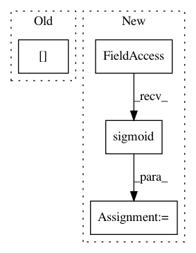

db4c8744b0c7fa95502e1172dd4c597e62e55b0e,tensorrec/loss_graphs.py,WMRBLossGraph,loss_graph,#WMRBLossGraph#Any#Any#Any#,97
Before Change
predictions_sum_per_user = tf.reduce_sum(tf_sample_predictions, axis=1)
mapped_predictions_sum_per_user = tf.gather(params=predictions_sum_per_user,
indices=tf.transpose(positive_interaction_indices)[0])
// TODO smart irrelevant item indicator -- using n_items is an approximation for sparse interactions
irrelevant_item_indicator = n_sampled_items // noqa
After Change
def loss_graph(self, tf_prediction, tf_interactions, tf_sample_predictions, **kwargs):
// WMRB expects bounded predictions
tanh_prediction = tf.nn.sigmoid(tf_prediction)
tanh_sample_prediction = tf.nn.sigmoid(tf_sample_predictions)
return self.weighted_margin_rank_batch(tf_prediction=tanh_prediction,
tf_interactions=tf_interactions,
In pattern: SUPERPATTERN
Frequency: 3
Non-data size: 4
Instances
Project Name: jfkirk/tensorrec
Commit Name: db4c8744b0c7fa95502e1172dd4c597e62e55b0e
Time: 2018-02-27
Author: james.f.kirk@gmail.com
File Name: tensorrec/loss_graphs.py
Class Name: WMRBLossGraph
Method Name: loss_graph
Project Name: tensorlayer/tensorlayer
Commit Name: 0158adf689bfee1b0a2a1d3718dd1c83829d005c
Time: 2017-12-18
Author: jorgemf@gmail.com
File Name: example/tutorial_imagenet_distributed.py
Class Name:
Method Name: run_evaluator
Project Name: PIQuIL/QuCumber
Commit Name: e0a6320eea05765e913448d81f2fe9a0185cc2b7
Time: 2018-07-06
Author: ijsdevlu@edu.uwaterloo.ca
File Name: qucumber/rbm/rbm.py
Class Name: ComplexRBM
Method Name: compute_batch_gradients